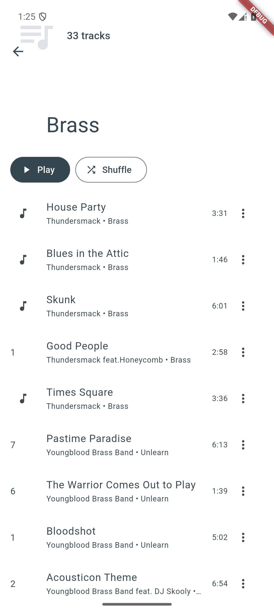
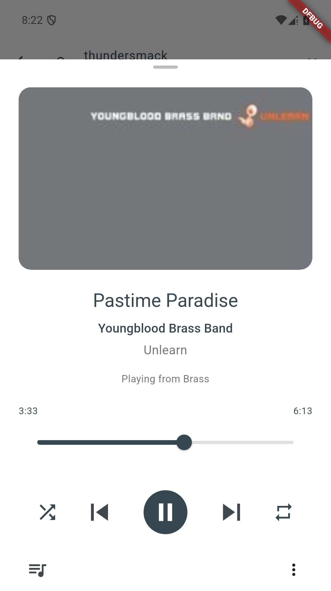
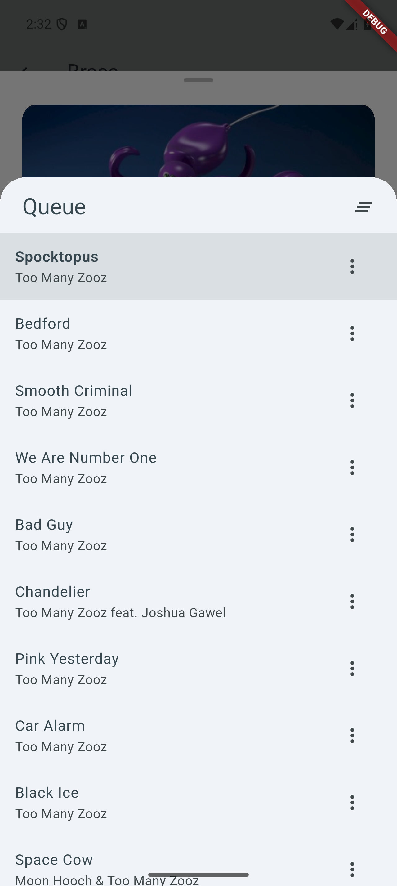
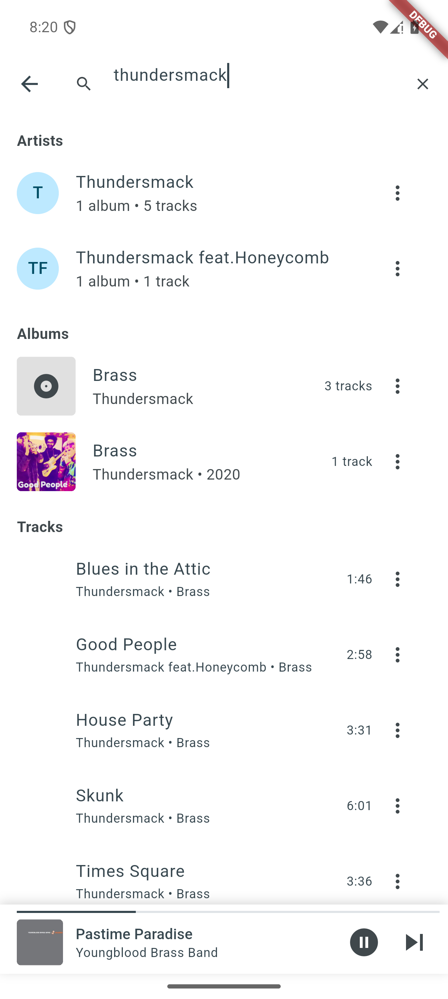
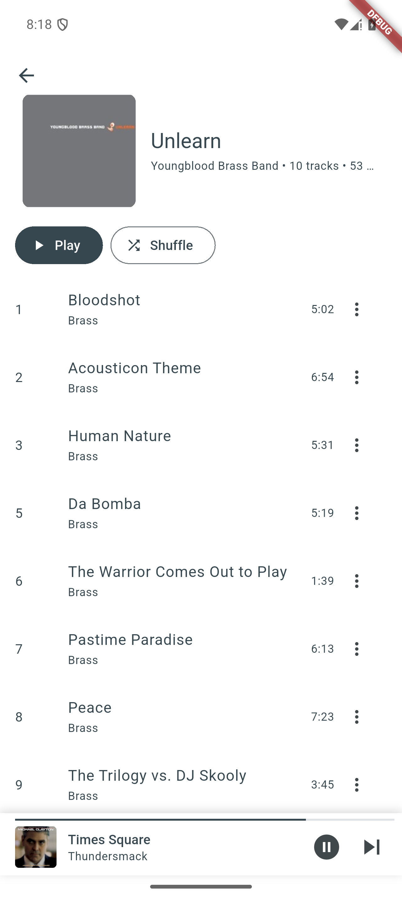
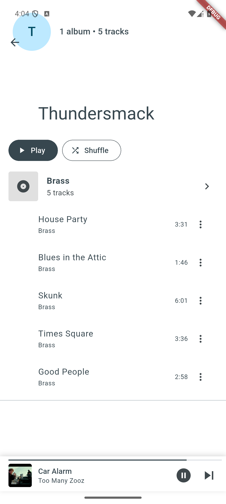

Play Your OwnTone Library on Your Phone
Sync the playlists you want from your OwnTone server, then play them in the app — fully offline, with artwork, ratings and play counts that make it back to the server
Features
Play Your Music
A built-in player: tap any track to play it in context, with a queue you can reorder, shuffle and repeat. Playback keeps going in the background, from the lock screen and your Bluetooth controls — and it resumes right where you left off, even if you close the app
Automatic Sync
Schedule syncs to keep your library up to date automatically — optionally only while charging or on WiFi
Browse Your Library
Browse synced music by playlists, artists, albums or tracks, with search, per-tab sorting, and album artwork that works offline
Star Ratings
Rate tracks with half-star precision. Ratings sync both ways with your server — if a rating changed on the server since your last sync, the server's value wins
Play & Skip Counts
Measured directly by the player — nothing to enable, no extra permissions. A track counts as played once you have listened to 90% of it or four minutes, whichever comes first, and moving on early counts as a skip. Counts upload to your OwnTone server on the next sync, feeding smart playlists
Sync History
Track all sync operations with detailed logs and statistics
Privacy First
All data stays on your device and your personal server—no cloud storage
How Playback Works
Start a track by tapping it anywhere — in a playlist, an album, an artist, or the search results — and Owntone Player plays it in context, with the rest of that list queued up behind it. Prefer to start a whole collection? Every playlist, album and artist has its own Play and Shuffle buttons. And when you just want to slot one song in, long-press any track (or open its ⋮ menu) for Play next and Add to queue.
The Now Playing view has everything at hand: artwork, a seek bar, shuffle and repeat, and the queue itself — drag to reorder, swipe a row away to remove it. Open it any time from the player bar docked at the bottom of the screen.
Playback keeps going when the app is in the background or the screen is off, driven from your lock screen, the notification, and your Bluetooth controls. And it holds up: close the app — or let Android do it for you — and the next time you open it, your queue, position, shuffle order and repeat mode are restored exactly where you left off.
If a track can't play — say its file went missing — the player skips past it with a short notice and carries on. If an entire queue turns out to be unplayable, it stops and offers to sync again to repair the missing files, rather than leaving you parked in an error state.
Screenshots






Data Safety
No data collection
The app does not collect, transmit, or store any personal data on external servers
Local storage only
All music and settings remain on your device — play counts, skips and ratings go only to your own OwnTone server
Direct connection
Communicates only with your personal OwnTone server
No third-party tracking
No analytics, no advertisements, no external services
See our Privacy Policy for complete details
Frequently Asked Questions
What is OwnTone?
OwnTone (formerly forked-daapd) is a free, open-source media server that lets you stream your music collection. Learn more at owntone.github.io.
Do I need an OwnTone server?
Yes, this app requires an OwnTone server that is reachable when you sync. The server stores your music library. Once synced, playback and artwork work fully offline.
What audio formats are supported?
MP3, FLAC, AAC, WAV, M4A, and other formats supported by OwnTone.
Can I use my synced music in other apps?
Yes — synced files are normal audio files with standard M3U playlists in the folder you chose, so any music player can read them. Note that play counts, skips and ratings from other players are not tracked; only what you listen to in this app is sent back to OwnTone.
What permissions does the app need?
Storage access (to save music files to a folder you choose), internet access (to connect to your server), and permission to show notifications (for sync progress and media playback). The app does not request notification access and cannot read your notifications.